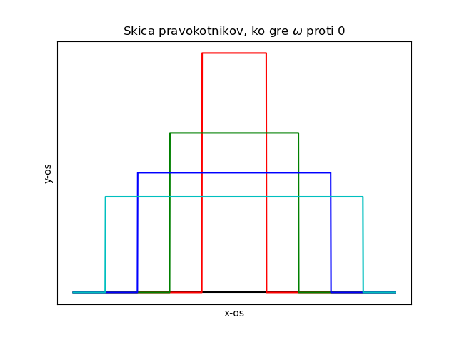

Mafija P 20240305
Table of Contents
1. Fourierova analiza in Diracova delta
V fiziki imamo dve pomembno idealizaciji: točkaste delce in pa ravne valove.
Ravni val lahko zapišemo z enačbo
\begin{align*} f(t) &= e^{i\omega t} \\ g(\vec{r}) &= e^{i(\vec{k} \cdot \vec{r} - \omega t)} \\ h(x_{\mu}) &= e^{ik^{\mu}x_{\mu}} \end{align*}V zgornjih enačbah so prikazani trije različni zapisi za funkcijo ravnega vala. Te funkcije znamo odvajati in nastale linearne diferencialne enačbe znamo enostavno rešiti.
Funkcijo ravnega vala uporabljamo kvantni mehaniki, valovanju in nihanju, v elektronskih vezjih, itd.
Funkcija ravnih valov tvorijo ortogonalno bazo na \( L ^2 [\mathbb{R}] \), kjer je \( L \) kvadrat integrabilne funkcije.
\begin{equation} \label{eq:13} \int\limits_{-\infty}^{\infty} e^{i\omega t} e^{-i \omega' t} \, dt \begin{cases} 0; \omega \not = \omega' \\ ??; \omega = \omega' \end{cases} \end{equation}Če sta krožni frekvenci \( \omega = \omega' \) enaki, potem integral \( \int\limits_{-\infty}^{\infty} 1 \, dt \) formalno ne konvergira. Kar lahko naredimo pa je, da ga regulariziramo kot limito.
\begin{align*} \lim_{\beta \to 0} \left( \int\limits_{-\infty}^{\infty} e^{-\beta |t|} e^{i\omega t} e^{-i\omega' t} \,dt \right) &= \lim_{\beta \to 0} \left[ \left. \frac{e^{-\beta t} e^{i\omega t} e^{-i\omega' t}}{i\omega - i\omega' - \beta} \right|_0^{\infty} + \left. \frac{e^{\beta t} e^{i\omega t}e^{-i\omega' t}}{i\omega -i \omega' + \beta} \right|_{-\infty}^0 \right] \\ &= \lim_{\beta \to 0} \left[ - \frac{1}{i\omega - i\omega' - \beta} + \frac{1}{i\omega - i\omega' + \beta} \right] \\ &= \lim_{\beta \to 0} \frac{-2\beta}{(i\omega - i\omega') ^2 - \beta ^2} \\ &= \lim_{\beta \to 0} \frac{2\beta}{(\omega - \omega' )^2 + \beta ^2} \end{align*}Poglejmo sedaj primere izračunane limite
\begin{equation} \label{eq:14} \lim_{\beta \to 0} \frac{2\beta}{(\omega - \omega' )^2 + \beta ^2} = \begin{cases} 0; \omega-\omega' > 0 \\ \frac{1}{0}; \omega - \omega' = 0 \end{cases} \end{equation}Očitno to ni prava funkcija, saj imamo deljenje z 0. Kako pa se obnaša integral te funkcije?
Definiramo \( \omega - \omega' = u \)
\begin{equation} \label{eq:15} \int\limits_{-\infty}^{\infty} \frac{2\beta}{u ^2 + \beta ^2} \, du = 2\beta \frac{1}{\beta} \left. \arctan \frac{u}{\beta} \right|_{-\infty}^{\infty} = 2\pi \end{equation}Vidimo, da je integral neodvisen od \( \beta \) in če to kvazi-funkcijo uporabimo v integralu, je v redu, tudi ko \( \beta \to 0 \).
1.1. Diracova \( \delta \) funkcija
Funkcija poimenovana po Paulu Diracu, za katero je značilno, da je neskončno visoka, neskončno ozka špica z integralom 1.
vstavi sliko diracove funkcije (skica)
Matematično to ni funkcija, ampak porazdelitev/distribucija. Fizikalno, Diracova \( \delta \) funkcija predstavlja impulz kot so npr. pulz, udarec ali hipni prenos gibalne količine in predtavlja vez med diskretnim ter zveznim svetom.
S pomočjo te funkcije formalno zapišemo točkaste izvore in robne pogoje.
Če želimo želimo odčitati vrednost integrala v neki točko \( x_0 \) to naredimo s pomočjo
\begin{equation} \label{eq:16} f(x_0) = \int f(x) \delta(x - x_0) \, dx \end{equation}Matematično predstavlja to Lebesgueov integral.
Spodnji primer nam pokaže, kaj se zgodi, če imamo kompozitum funkcij \( t \circ u \).
\begin{align} \label{eq:1} f(x) &= \int\limits_{-\infty}^{\infty} \delta(x - t) f(t) \, dx \\ &= \int\limits_{-\infty}^{\infty} f(u) \delta(x - t(u)) \left| \frac{dt}{du} \right| \, du \end{align}Zadnji kurčič palčič je Jacobian. Pomembna lastnost je to, da \( \delta \) funkcija ima enote (in jih nosi s seboj).
Druge lastnosti funkcije so še
\begin{align*} \delta(u) &= \delta(x) \left| \frac{dx}{du} \right| = \delta(x) \left| \frac{dx}{du} \right|^{-1} \\ \delta(ku) &= \frac{1}{k} \delta(u) \end{align*}Poleg tega naj omenimo, da ima v zgornjem primeru \( \delta(u) \) enote \( \left[ \frac{1}{u} \right] \), saj \( \delta(u) du \) nima enot.
Če ima funkcija \( u(x) \) več ničel, to potem pomeni, da imamo več \( \delta \).
1.2. Druga definicija \( \delta u \)
Vsako funkcijo \( \int f(u) = 1 \) lahko stisnemo v x in raztegnemo v \( y \rightarrow \delta(u) \).
Vzemimo za primer funkcijo od prejšnjega predavanja:
\begin{equation} \label{eq:17} \lim_{q \to \infty} e^{iq(x-x_0) ^2} = \sqrt{\frac{\pi}{qi}} \delta(x-x_0) \end{equation} \begin{equation} \label{eq:18} f(u) = \lim_{w \to 0} \frac{rect(\frac{u}{w})}{2w} \end{equation}Funkcija \( rect(\frac{u}{w}) \) predstavlja pravokotnike.

Kaj pa Gaussova funkcijo, ko gre \( \sigma \to 0 \)?
\begin{equation} \label{eq:19} \delta(u) = \lim_{\sigma \to 0} \frac{1}{\sqrt{2\pi\sigma}} e^{\frac{u ^2}{2\sigma ^2}} \end{equation}
Poglejmo še en primer, tokrat s funkcijo \( \sin \).
\begin{equation} \delta(u) = \lim_{\epsilon \to 0} \frac{\sin \left( \frac{u}{\epsilon} \right)}{\pi u} \end{equation}
1.3. Primer več ničel
Razliko kvadratov smo razcepili na ničle in imamo tako \( \delta \) funkcijo, ki ima 2 ničli, tj. eno pri \( x = x_0 \) in drugo pri \( x = -x_0 \).
1.4. \( \delta \) funkcija znižuje dimenzije
1.4.1. Točkasti naboj
Za točkasti naboj imamo sledečo enačbo za gostoto električnega polja.
\begin{align*} \rho_e (\vec{r})dV &= e_0 \delta(x-x_0)dx \, \delta(y-y_0)dy \, \delta(z-z_0) dz \\ \rho_e (\vec{r}) &= e_0 \delta(\vec{r} - \vec{r_0}) \end{align*}\( \rho_e \) je gostota naboja in \( e_0 \) je naboj.
1.4.2. Površinski naboj
\( \sigma(x,y) \) je ploskovni naboj. Vidimo lahko, da smo se s pomočjo \( \delta \) funkcije rešili dimenzije \( z \), saj je sedaj predstavljena kot skok naboja v dani koordinati.
1.4.3. Fizika osnovnih delcev (delo z ravnimi valovi).
V fiziki osnovnih delcev imamo integral (oz. vsoto verjetnosti) po vseh možnih izidih (tj. po vseh gibalnih količinah in energijah izmenjanjega delca).
\begin{equation} \label{eq:2} \iiiint \limits_{-\infty}^{\infty} \alpha \, d^4 p H(E) \delta(E ^2 - p ^2 - m ^2) \end{equation}\( \alpha \) je stvar, ki jo integriramo. \( d^4 \) je integral po \( E \), \( p_x \), \( p_y \) in \( p_z \). Velja tudi \( (mc ^2)^2 = E ^2 - p ^2 c ^2 \), ki služi kot pogoj, da je masa delca prava. Heavisideova funkcija (ki je stopnica) zahteva \( E>0 \). Energijo v \( \delta \) funkciji lahko zapišemo kot \( E ^2 - E_p ^2\). \( E_p = p ^2 - m ^2\) je energija delca z gibalno koliċino \( p \).
\begin{align*} d^3p\, dE H(E) \left[ \frac{\delta(E- E_p)}{\left| 2E_p \right|} + \frac{\delta(E+ E_p)}{\left| 2E_p \right|} \right] = d^3 p \int dE \frac{\delta(E-E_p)}{\left| 2E_p \right|} = \frac{d^3p}{\left| 2E_p \right|} \alpha \end{align*}S pomočjo \( \delta \) funkcije smo se rešili ene dimenzije in ostane nam samo integral po gibalnih količinah. Po integraciji, utežimo z \( \frac{1}{2E} \).
1.5. Integrali in odvodi
Heavisidova stopnica (Heaviside step function)
\begin{equation} \label{eq:3} \int\limits_{-\infty}^x \delta(t) \, dt = H(x) \end{equation}
S pomočjo te funkcije zlahkoto opišemo zlepke dveh (ali več) funkcij. Vzemimo za primer, da želimo graf funkcije
\begin{equation} \label{eq:20} h(x) = \begin{cases} f(x) = \sqrt{x}; & x>0 \\ g(x) = x ^2; & x < 0 \end{cases} \end{equation}Funkcijo tako predstavimo s pomočjo Heaviseove funkcije z \( f(x) H(x) + g(x) H(-x) \)
in sam graf funkcije izgleda kot
1.5.1. Odvod
Funkcijo v prvi vrstici smo odvajali po \( x \) in potem s pomočjo per partes dobili 3. vrstico. Člen \( \left. \delta(t-x) f(t) \right|_{-\infty}^{\infty} \) gre proti nič, drugi pa ostaja.
Splošna formula za odvod je tako
\begin{equation} \label{eq:21} \int\limits_D f(x) \delta^{[n]} (x - a) \,dx = (-1)^n f^{[n]}(a) \end{equation}Odvod \( \delta' (t-x) \approx f(x-\epsilon)-f(x+\epsilon) \). Poleg tega \( \delta' (u) \) odčita odvod \( f \) v točki 0. Preko per partesa dobimo iz zgornjega integrala
Fizikalno sta 2., 4. in ostali sodi višji odvodi točkasti dipoli - dva točkasta naboja, ki sta nasprotno nabita in neskončno skupaj, kar poda končni produkt.
Sedaj lahko precej lažje zapišemo energijo, če imamo podano gostoto naboja \( \rho_e = e \delta(x - x_0) \)
\begin{equation} \label{eq:22} W = \int \rho_e U \, dV = e \int \delta(x - x_0)U \, dV = e U(x_0) \end{equation}oz. v primeru ploskovnega naboja \( \rho_e = p_e \delta' (x - x_0) \) je potem energija
\begin{equation} \label{eq:23} W = \int \rho_e U \,dV = p_e \int \delta' (x - x_0) U(x) \, dx = - p_e \left. \frac{\partial U}{\partial x} \right|_{x= x_0} = \vec{p} \cdot \vec{E} \end{equation}kjer smo \( \vec{E} \) definirali kot \( \vec{E} = - \nabla U = - \frac{\partial U}{\partial x} \)
1.6. Fourierova analiza
Fourierova analiza ima fizikalno velik pomen, saj lahko z njo splošno zapišemo diskretno superpozicijo ravnih valov
\begin{equation} \label{eq:26} \psi (x) = \sum\limits_n A_n \psi_{n} = \sum\limits_n A_n e^{ik_n x} \end{equation}lahko pa tudi zapišemo zvezno superpozicijo ravnih valov
\begin{equation} \label{eq:27} \psi(x) = \frac{1}{2\pi}\int\limits_{-\infty}^{\infty} A(k) e^{ikx} \,dk \end{equation}kjer je \( A(k) \) spektralna gostota.
1.6.1. Primer: Spekter z eno valovno dolžino
Velja, da je \( A(k)\not = 0 \) in \( k = k \).
Rešitev valovne enačbe je ravni val, ki ga potem zapišemo kot
\begin{equation} \label{eq:24} A(k) = 2\pi \delta(k - \kappa) \end{equation}Valovna funkcija je tako
\begin{equation} \label{eq:25} \psi (x) = \frac{1}{2\pi} \int\limits_{-\infty}^{\infty} 2\pi \delta(k - \kappa) e^{ikx} \,dk = e^{i\kappa x} \end{equation}
1.6.2. Primer: Diskretni spekter
Za \( A(k) = \sum\limits_n A_n (2 \pi )\delta(k - k_n) \) je valovna funkcija
\begin{equation} \label{eq:28} \psi(x) = \sum\limits_n A_n e^{ik_n x} \end{equation}
1.6.3. Vsota ravnih valov
S podano ortogonalnostno relacijo lahko sedaj zapišemo funkcijo kot vsoto ravnih valov
\begin{equation} \label{eq:4} S(\omega - \omega ') = \frac{1}{2\pi} \int\limits_{-\infty}^{\infty} e^{i\omega t} e^{-i \omega' t} \end{equation}Drugačen zapis
\begin{equation} \label{eq:5} f(t) = \int\limits_{-\infty}^{\infty} F(\omega) e^{i\omega t} d\omega \end{equation}\( F(\omega) \) je spekter, kar je Fourierova transformacije funkcije \( f(t) \). Ta enačba je primer lanskoletnih kompleksnih impedanc. Vendar smo lansko leto pri predmetu Klasična fizika večinoma delali s sinusnimi napetostmi? Kaj pa se zgodi, če imamo škatlasto?
Obe strani enačbe pomnožimo z \( \int e^{-\omega t} \left\langle \right\rangle \,dt\)
\begin{align*} \int\limits_{-\infty}^\infty f(t) e^{-i \omega t} \, dt &= \iint\limits_{-\infty}^{\infty} F(\omega) e^{i\omega t} e^{-i\omega t}\, d\omega dt \\ &= 2\pi \int\limits_{-\infty}^{\infty} F(\omega) \delta(\omega - \omega ' ) d\omega = 2\pi F(\omega' ) \\ F(\omega' ) &= \frac{1}{2\pi} \int\limits_{-\infty}^{\infty} f(t) e^{i\omega t} \, dt \end{align*}Let’s make a table!
\begin{tabular}{|c|c|c|} Časovna funkcija & Frekvenčna funkcija & Opombe \\ \( f(t) \) & \( F(\omega) \) & \\ \( f' (t) \) & \( i\omega F(\omega) \) & \\ \( e^{i\omega t} \) & \( \delta(\omega - \omega_0) \) & En ravni val je en diskretni del spektra/ \\ \( \delta(t - t_0) \) & \( \frac{1}{2\pi} e ^{-\omega t_0} \) & \\ \( \frac{1}{\sqrt{2\pi \sigma ^2}} \exp(- \frac{t ^2}{2 \sigma ^2}) \) & \( \frac{1}{2\pi} \exp{- \frac{\sigma ^2 \omega ^2}{2}} \) & Načelo nedoločenosti \\ \( \int\limits_{-\infty}^{\infty}f(t) \,dt\) & \( 2\pi F(0) \) & \\ \( \sum\limits_{n=-\infty}^{\infty} \delta(n\tau) \) & \( \frac{1}{2\pi} \sum\limits_{n=-\infty}^{\infty} \cos(n \omega \tau) \) & \text{Diracov glavnik} \\ Soda realna funkcija & Realna \( F(-\omega) = F^* (\omega) \) & * označuje kompleksno konjugacijo \end{tabular}1.6.4. Diracov glavnik (ang. Dirac comb)
Kakor smo lahko videli v zgornji tabeli, je definiran kot neskončna vsota \( \delta \) funkcij, ki so na konstatnem razmaku.
Diracov glavnik je zelo uporaben pri vzorčenju.
Vzemimo za primer
\begin{equation} \label{eq:29} W_\tau (t) = \sum\limits_{n=-\infty}^{\infty} \delta(t - n\tau) \end{equation}kjer je \( \tau \) perioda. Graf Diracovega glavnika izgleda
Diracov glavnik ima določene lastnosti, ki nam lahko olajšajo življenje.
\begin{equation} \label{eq:30} W_{\tau}(t) = \frac{1}{T} W_{\tau} (\frac{t}{\tau}) \end{equation}Ta lastnost velja zaradi lastnosti \( \delta \) funkcije.
Pri vzorčenju velja
\begin{equation} \label{eq:31} \int\limits_{-\infty}^{\infty} f(t) W_{\tau}(t) \,dt = \sum\limits_{n=-\infty}^{\infty} f(n\tau) \end{equation}kjer so \( t_n = n\tau \) signali zajeti ob času \( t_n \).
Ter periodičnost Fourierove transformacije
\begin{equation} \label{eq:32} W_{\tau}(t+ \tau) = W_{\tau}(t) \end{equation}Slednje lahko zapišemo s Fourierovo vrsto
\begin{align*} W_{\tau} (t) &= \frac{1}{\tau} \sum\limits_{k = -\infty}^{\infty} e ^{i2\pi k \frac{t}{\tau}} \\ &= \frac{1}{\tau} \sum\limits_{k = -\infty}^{\infty} e ^{i k \omega_0 t} \end{align*}kjer zapišemo \( \omega_k = \omega_0 k\) in \( \omega_0 = \frac{2\pi}{\tau} \)
Tako velja
\begin{equation} \label{eq:33} W_{\tau}(t) \leftrightarrow \frac{1}{\tau} W_{\frac{1}{\tau}} (\nu) = \sum\limits_{k=-\infty}^{\infty} e^{i2k\tau \nu} \end{equation}1.6.5. Fourierova vrste, transformacije
- Fourierova vrsta
Vsako periodično funkcijo \( f(t) \) z neko periodo \( T \) oz. krožno frekvenco \( \omega = \frac{2\pi}{T} \) se da zapisati v Fourierovo vrsto. Zapisov vrste je več in bomo omenili samo ključnega, omenjenega tudi na predavanjih.
\begin{equation} \label{eq:35} f(t) = \sum\limits_{k=-\infty}^{\infty} c_n e^{-i\omega nt} \end{equation}Koeficiente vrste \( c_n \) zapišemo kot
\begin{equation} \label{eq:36} c_n = \frac{1}{2\pi} \int\limits_{0}^{T} f(t) e^{int} \, dt \end{equation}Ker je funkcija periodična ni važno, kakšne so meje, dokler obe integracijski meji premaknemo za enako vrednost (npr. \( [-\frac{T}{2}, \frac{T}{2}] \)). Če ima vrste simetrične lastnosti, lahko dolžino intervala še skrajšamo bodisi na polovico ali četrtino podanega intervala.
Pri Fourierovi vrsti imamo na časovni strani omejeno območje \( [-\pi, \pi] \), na frekvenčni strani pa kot rezultat dobimo diskretno.
Fourierovi integrali so integralska transformacija, ki pretvori funkcijo v obliko, ki opiše frekvence, ki so se pojavile v originalni funkciji. Rezultat integrala je kompleksen. Splošnejši zapis Fourierovih integralov, ki nima nujno opravka s spektri, se imenuje Fourierova transformacija.
- Fourierovi integrali
\begin{align*} F(\omega) &= \frac{1}{2\pi} \int\limits_{-\infty}^{\infty} f(t) e^{-i\omega t} \,dt \\ f(t) &= \int\limits_{-\infty}^{\infty} F(\omega) e^{i\omega t} \, d\omega \end{align*} - Fourierova transformacija
\begin{align*} Y(k) &= \frac{1}{2\pi} \int\limits_{-\infty}^{\infty} y(x) e^{-ikx} \,dx \\ y(x) &= \int\limits_{-\infty}^{\infty} Y(k)e^{ikx} \,dk \end{align*}S pomočjo teh enačb si lahko olajšamo reševanje določenih diferencialnih enačb. Za primer je v Matematika v fiziki in tehniki na str. 41, enačba 2.42.
- Fourierova transformacija zaporedja
\begin{align*} F(\omega) &= \sum f_n e^{-in\omega} \\ f_n &= \int F(\omega) e^{in\omega} \, d\omega\\ \end{align*}Pri transformaciji zaporedja iz diskretne območja pri časovni funkciji preidemo v omejemo območje.
- Diskretna Fourierova transformacija DFT
Diskretna Fourierova transformacija (ang. Discrete Fourier Transform or DFT for short) je ekvivalentna zvezni Fourierovi transformaciji, vendar samo za signale, ki jih poznamo ob trenutkih \( N \), ki so si narazen za čas \( T \).
Če imamo zvezno funkcijo signala \( f(t) \), je potem \( N \) rezultatov predstavljeno kot \( f_0, f_1, f_2, \ldots, f_{N-1} \).
Definicijo Fourierove transformacije, ki obstaja samo v prej omenjenih točkah lahko torej zapišemo kot vsoto
\begin{equation} \label{eq:34} F(i\omega) = \sum\limits_{k = 0}^{N-1} f_k e^{-i\omega kt} \end{equation}Prvotna Fourierova transformacija ima meje od \( (-\infty, \infty) \), vendar lahko tako prvotno, kakor DF transformacijo zapišemo v končnem intervalu, če je funkcija periodična.
Pri iskanju izračunamo vrednosti DFT pri ničti resonančni frekvenci in njenih vzbujenih stanjih, \( \omega_0 = \frac{2\pi}{NT} \)
\begin{equation} \label{eq:37} F[n] = \sum\limits_{k = 0}^{N - 1} f[k] e^{-i \frac{2\pi}{NT} nk}; \, (n = 0: N-1) \end{equation}Definiramo \( W = e^{-i \frac{2\pi}{NT} nk} \) Tako dobimo enačbo v obliki matrike
\begin{equation} \label{eq:38} \begin{bmatrix} F[0] \\ F[1] \\ F[2] \\ \ldots \\ F[N-1] \end{bmatrix} = \begin{bmatrix} 1 & 1 & 1 & 1 & \ldots & 1 \\ 1 & W & W^2 & W^3 & \ldots & W^{N-1} \\ 1 & W^2 & W^4 & W^6 & \ldots & W^{N-2} \\ 1 & W^3 & W^6 & W^9 & \ldots & W^{N-3} \\ \ldots & & & & & \\ 1 & W^{N-1} & W^{N-2} & W^{N-3} & \ldots & W \\ \end{bmatrix} \begin{bmatrix} f[0] \\ f[1] \\ f[2] \\ \ldots \\ f[N] \end{bmatrix} \end{equation} \begin{align*} c_n &= \frac{1}{N}\sum\limits_k f_k e^{-i \frac{2\pi k n}{N}} \\ f_n &= \sum\limits_k c_k e^{+i \frac{2\pi k n}{N}} \end{align*}Pri FFT transformacija slika iz diskretnega območja v diskretno.
\( \mathbb{Z}_N \) je končen cikličen del celih števil (npr. ura ima \( \mathbb{Z}_{12} \)).
1.7. Konvolucija
Operacija na dveh funkcija, označena z *. Definicija
\begin{equation} \label{eq:6} f*g = \int\limits_{-\infty}^{\infty} f(x-t) g(t) \, dt = \int\limits_{-\infty}^{\infty} f(t) g(x-t) \, dt \end{equation}S3.5 (po zamenjavi)
Če vzamemo \( f(x) = \delta(x) \). To nam potem da
\begin{equation} \label{eq:7} \delta * g = \int\limits_{-\infty}^{\infty} \delta(x-t) g(t) \, dt = g(x) \end{equation}S3.6 (pred zamenjavo)
Našo funkcijo smo razbili na vsoto špičk. Konvolucija zamenja vsako točko funkcije z jedrom konvolucije \( f \). Funkciji \( f \) lahko v tem primeru rečemo impulzni odziv, Greenova funkcja, point spread function, prenosna funkcija.
Jedro je lahko različnih oblik: Gaussian blur, RC člen (počasno praznjenje), drseče povprečje (škatla), leaky integrator, odmev. S3.7
Lastnost konvolucje pod Fourierovo transformacijo:
\begin{equation} \label{eq:8} f*g = h \end{equation}Če zgornja enačba drži, potem velja sledeči produkt.
\begin{equation} \label{eq:9} F(\omega) \cdot G(\omega) = H(\omega) \end{equation}Dokazič
\begin{align*} \iiint F(\omega) e^{i\omega ' (x-t)} d\omega G(\omega) e^{i\omega t} d\omega ' \,dt &= \iint e^{i\omega t} F(\omega) G(\omega) \int e^{i(\omega' - \omega)} \, dt d\omega d\omega' \\ &= 2\pi \iint e^{i\omega x}F(\omega)G(\omega)d\omega \end{align*}Konvolucija nam ustreza, ker ima FFT časovno zahtevnost \( O(n \log n) \). S3.8
1.7.1. Diskretna konvolucija
Definicija je
\begin{equation} \label{eq:10} c_n = \sum\limits_k a_{n-k} b_k \end{equation}oz.
\begin{equation} \label{eq:11} [c] = [a] * [b] \end{equation}To nas spominja na množenje polinomov. Dejanska useful case
\begin{equation} \label{eq:12} \overline{a_2 a_1 a_0} = a_0 + 10 a_1 + 10 ^2 a_2 \end{equation}Polinom pri x: baza je razvoj po x-tiškem sistemu in FFT nam pohitri pomnoži števila z visoko natančnostjo.